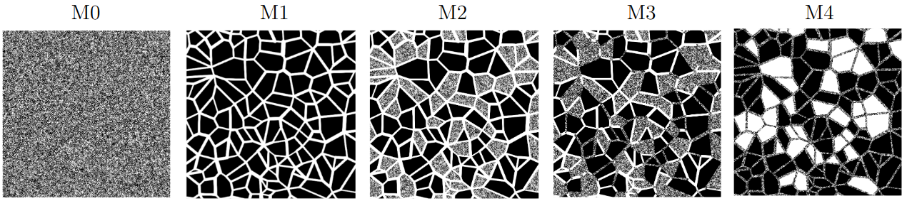
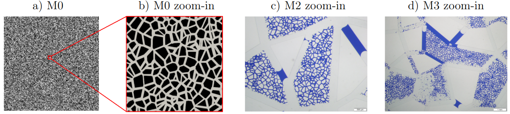
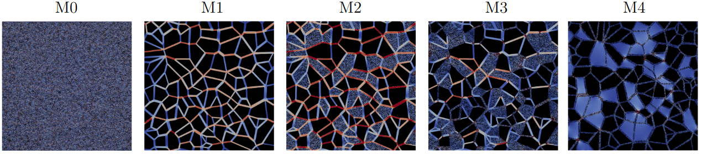

Multiscale Micromodels¶
In the field of porous media experimentation, recent advancements in micromodel manufacturing have enabled the creation of multiscale rock analogs. These analogs are characterized by the presence of micro and macro porosities. Thanks to its optical characteristics, micromodels facilitate a clear visualization of flow structures. These models offer two-dimensional approximations that effectively capture the behaviors and connectivity of pores present within the rock structure.
The micromodels M1, M2, M3 and M4 are simulated and compared with the experimental results of Wolf et al. [8] (https://doi.org/10.1039/D2LC00445C). Each of these micromodels has a square dimensions of \(25 \times 25~mm\) and approximate depths of \(31(0.5)~\mu m\), \(34.8(0.9)~\mu m\), \(33.6(0.5)~\mu m\), and \(32.0(2.9)~\mu m\) for models M1, M2, M3, and M4, respectively. Figures 27 illustrate the micromodels structure. Additionally, the M0 micromodel is used to represent microporosity in the M2, M3, and M4 micromodels by overlapping the M1 and M0 micromodels in the specific micro-pore regions. {numref}`MX-P-Micro` illustrates the micro-porosity present in the micromodels M0, M2, and M3, using a zoomed-in images. Consequently, each micromodel is uniquely characterized by its pore structure described by:
Micromodel 0 (M0): micro pore scale with pore diameter ranging from \(20\) to \(50\) \(\mu m\);
Micromodel 1 (M1): macro pore scale with pore diameter ranging from \(200\) to \(500\) \(\mu m\);
Micromodel 2 (M2): dual pore scale version of M1 with porous grains of pore diameter ranging from \(20\) to \(50\) \(\mu m\);
Micromodel 3 (M3): dual pore scale version of M1 with porous grains and porous throats, both with pore diameter ranging from \(20\) to \(50\) \(\mu m\);
Micromodel 4 (M4): dual pore scale version of M1 with voids and porous throats of pore diameter ranging from \(20\) to \(50\) \(\mu m\).
{kind=link}

Fig. 27 - Micromodels based on the Voronoi tessellation: M0 - micro pore scale; M1 - macro pore scale; M2 - dual pore scale version of M1 with porous grains; M3 - dual pore scale version of M1 with porous grains and porous throats; M4 - dual pore scale version of M1 with voids and porous throats.¶
{kind=link}

Fig. 28 - Micro-porosity based on the Voronoi tessellation: a) M0 micromodel; b) zoomed-in image showing the micro-porosity of the M0 structure; c) zoomed-in image of the micro-porosity in the experimental micromodel M2; d) zoomed-in image of the micro-porosity in the experimental micromodel M3. The experimental micromodel images c) and d) are saturated with two fluids.¶
Absolute Permeability - Numerical Setup¶
To simulate the micromodels depicted in Figures 27, the geometries are discretized into two grids as described in Tab. 2. The first and last mesh points along the \(y\) and \(z\) axes are designated as solid, representing the walls of the micromodel. The fluid flows through the \(z\)-axis promoted by an external force.
Model |
Mesh 1 (Voxel size [\(\mu\mathrm{m}\)] — Grid [\(x,y,z\)]) |
Mesh 2 (Voxel size [\(\mu\mathrm{m}\)] — Grid [\(x,y,z\)]) |
\(\boldsymbol{\phi_{\mathrm{dig}}}\) [%] |
|---|---|---|---|
M0 |
\(5.00 \;-\; 5000 \times 5002 \times 9\) |
\(2.50 \;-\; 10000 \times 10002 \times 16\) |
46.1 |
M1 |
\(4.42 \;-\; 5646 \times 5648 \times 9\) |
\(2.21 \;-\; 11292 \times 11294 \times 16\) |
27.3 |
M2 |
\(5.00 \;-\; 5000 \times 5002 \times 9\) |
\(2.50 \;-\; 10000 \times 10002 \times 16\) |
40.2 |
M3 |
\(4.86 \;-\; 5148 \times 5150 \times 9\) |
\(2.43 \;-\; 10296 \times 10298 \times 16\) |
33.6 |
M4 |
\(4.57 \;-\; 5468 \times 5470 \times 9\) |
\(2.28 \;-\; 10936 \times 10938 \times 16\) |
36.7 |
A configurations example for the micromodel simulations is provided in .db below, using the M1 model with a grid size of
\(5646 \times 5648 \times 9\) as an example. The domain settings InletLayers = 0, 0, 5 and OutletLayers = 0, 0, 5 are used to
connect the inlet and outlet of the periodic domain.
MRT {
tau = 1.0
F = 0.0, 0.0, 1.0e-6
timestepMax = 60000
tolerance = 0.00001
}
Domain {
Filename = "M1-Micro-5646x5648x9.raw"
ReadType = "8bit" // data type
N = 9, 5648, 5646 // size of original image
nproc = 1, 2, 2 // process grid
n = 9, 2824, 2823 // sub-domain size
offset = 0, 0, 0 // offset to read sub-domain
voxel_length = 4.42 // voxel length (in microns)
ReadValues = 0, 1, 2 // labels within the original image
WriteValues = 0, 1, 2 // associated labels to be used by LBPM
InletLayers = 0, 0, 5 // specify 10 layers along the z-inlet
OutletLayers = 0, 0, 5 // specify 10 layers along the z-inlet
BC = 0 // boundary condition type (0 for periodic)
}
Visualization {
write_silo = true // write SILO databases with assigned variables
save_pressure = true // save pressure field within SILO database
save_velocity = true // save velocity field within SILO database
}
Figure 29 illustrates the velocity magnitude field obtained for each micromodel. Tabela 3 analyzes and compares the obtained permeability values for each grid and with the experimental results of Wolf et al. [8].
{kind=link}

Fig. 29 - Velocity magnitude field obtained for each micromodel.¶
Model |
Mesh 1 |
Mesh 2 |
Mesh discrepancy |
Experimental Wolf et al. [8] |
Experimental discrepancy |
|---|---|---|---|---|---|
\(k_1\) [Da] |
\(k_2\) [Da] |
\(\left|\frac{k_1-k_2}{k_2}\right| \times 100\) [%] |
\(k_{\mathrm{exp}}\) [Da] |
\(\left|\frac{k_2-k_{\mathrm{exp}}}{k_{\mathrm{exp}}}\right| \times 100\) [%] |
|
M0 |
10.92 |
10.06 |
8.95 |
— |
— |
M1 |
9.49 |
8.88 |
6.87 |
8.91 (0.03) |
0.33 |
M2 |
16.56 |
15.42 |
7.39 |
13.24 (0.44) |
16.46 |
M3 |
7.26 |
6.52 |
11.35 |
5.74 (0.01) |
13.58 |
M4 |
4.41 |
3.75 |
17.60 |
5.71 (1.25) |
34.32 |